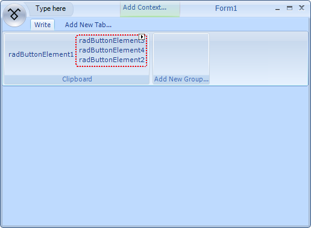
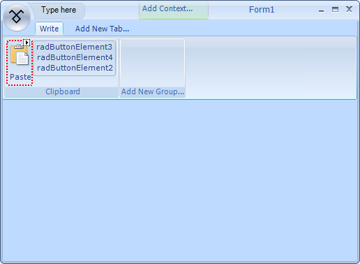
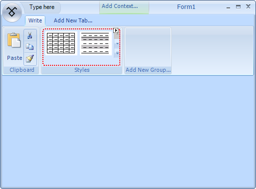

Using Different Elements on a RadRibbonBar
You can build the user interface of a Telerik RadRibbonBar using a variety of different elements. In this tutorial, you will see how some of these elements can be placed and customized.
Prepare an ImageList to be Used in the Telerik RadRibbonBar
Create a RadRibbonForm__control by adding it by clicking on the 'Add New Item...'
option in the context menu of the project or by changing the base class of a standard Windows Form to __RadRibbonForm.Open the designer of the RadRibbonForm
Drag a WinForms ImageList component from the Toolbox to the form.
In the area below the design surface, you will see imageList1.Using the Images Collection Editor, add the desired images to the ImageList. For more help with this task, see
How to: Add or Remove ImageList Images with the Designer in the Visual Studio 2005 documentation.
A predefined list of images has been prepared for the purpose of this demonstration.
Adding a Tab and a Group
Click Add New Tab... to create a new tab.
Type the word Write__and press __Enter.
Click off the __Write__tab to deselect it.
Select the __Write__tab again.
Click Add New Group... to create a new group.
Set the Text property of the new group to Clipboard.

Add Elements
Right-click the Clipboard__group and select __Add an item, and then RadButtonElement.
Select the__Clipboard__group again and by right-clicking on it add a Vertical Button Group.
Select the group and open the Properties__window. Find the __ShowBorder
property and set it to true.Select the __Vertical Button Group__and from its __Smart____Tag__execute the __Edit Items__action.
Add three __RadButtonElement__instances in the button group:
Customize the RadButtonElement
Select the RadButtonElement__which is outside the __Button Group.
Set the TextImageRelation property to ImageAboveText.
Set an appropriate image by modifying the __Image__property.
Set the ImageAlignment__property to __MiddleCenter.
Set the Text property to Paste__and the __TextAlignment
property to MiddleCenter.
With an appropriate __Image__the __RadRibbonBar__should look similarly:
Customize the RadButtonElements in the RadRibbonBarButtonGroup
Select the first RadButtonElement__in the __RadRibbonBarButtonGroup.
Set the DisplayStyle__property to __Image
Set the ImageAlignment__property to __MiddleCenter
Set the __Image__property with an appropriate image
Do the same for the rest elements in the __RadRibbonBarButtonGroup__so that the result looks similar to this:

Adding a RadGalleryElement
Select the RadRibbonBar__control and add another __RadRibbonBarGroup
called __Styles__in the 'Write'____tab.Select the Styles__group, right-click on it and add a __RadGalleryElement.
Select the __RadGalleryElement__and open the __Properties__window of Visual Studio.
Find the __Items__collection and add 6 __RadGalleryItem__instances.Set appropriate images to all of the RadGalleryItem instances.
For each __RadGalleryItem__set the __DisplayStyle__property to
__Image__so that no text appears.Find the MaxColumns__and __MaxRows properties of the
__RadGalleryElement__and set their values to 2 and 5 respectively. The result should be similar to this:
For the purpose of this demonstration Office 2007 like images for the gallery have been used.